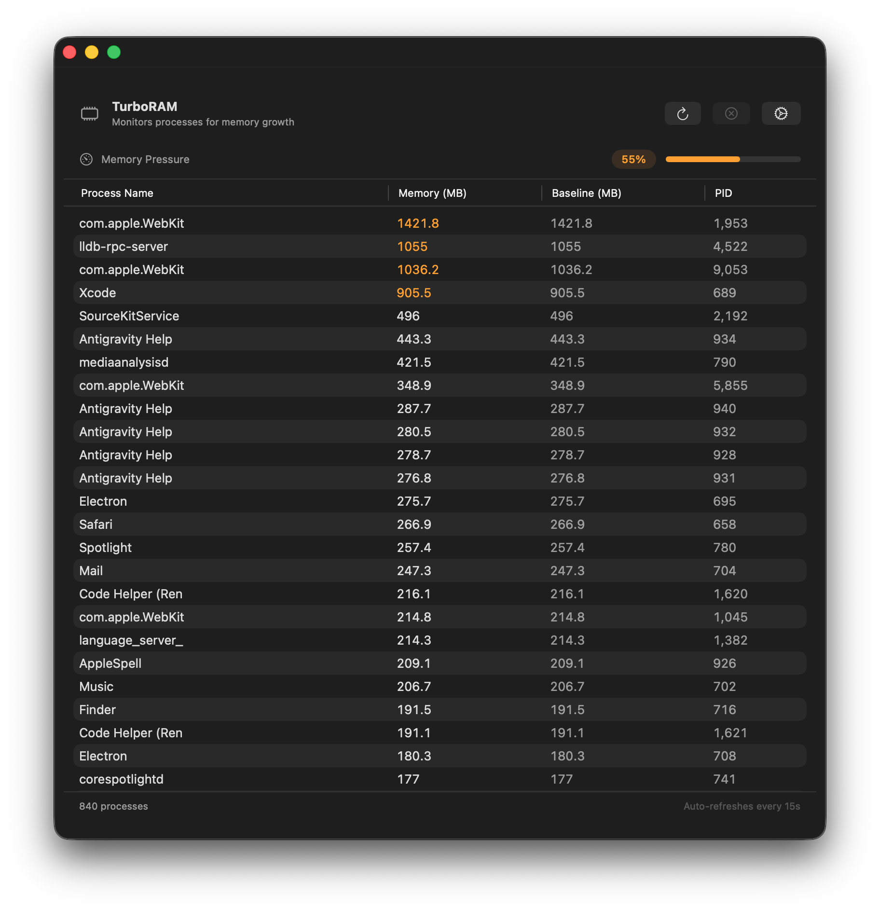

Never run out of RAM again.
TurboRAM monitors every process on your Mac and alerts you the moment memory usage spikes — right from your menu bar.



Lightweight RAM monitoring built specifically for macOS.
Always accessible but never in your way — live RAM stats right in your menu bar.
See exactly which apps are consuming your memory, sorted and updated in real time.
Set your own RAM threshold and get notified the moment usage crosses it.
Built for efficiency with minimal CPU and memory overhead — TurboRAM won't slow your Mac.
Zero tracking, zero data collection, zero internet connection needed. What happens on your Mac, stays on your Mac.
TurboRAM is completely free and open source. Feel free to contribute or inspect the code.